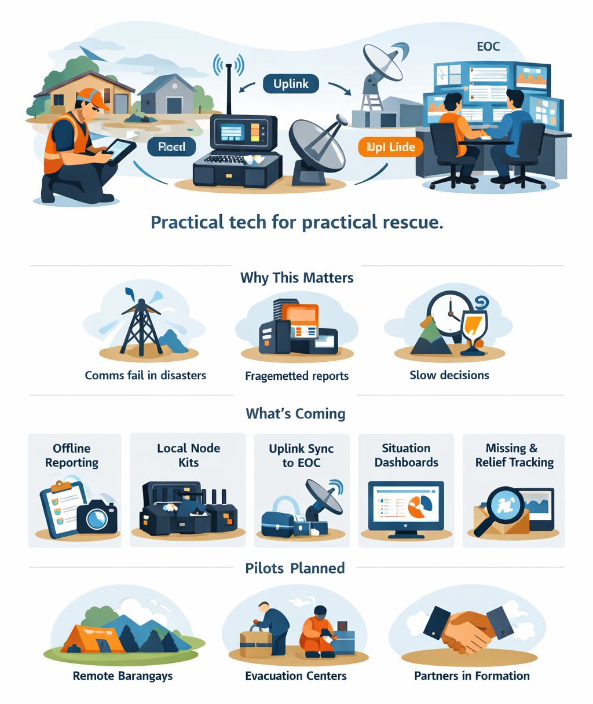

Comms fail during disasters
Power loss, signal congestion, and damaged infrastructure can cut off reliable reporting right when decisions matter most.
Organizing team and legal structure (in progress)
Offline-first disaster reporting and coordination for when networks fail—designed for barangays, responders, and EOCs to share a common operational picture.

Power loss, signal congestion, and damaged infrastructure can cut off reliable reporting right when decisions matter most.
Updates split across calls, chats, paper logs, and spreadsheets—making it hard to verify and consolidate.
Without a shared operational picture, response teams lose time coordinating, validating, and prioritizing actions.
A practical set of tools and workflows that operate locally first, then synchronize when backhaul is available.
Structured forms, photos, status updates, and queues that keep working without internet.
Barangay-level capture + coordination node for temporary operations and consolidation.
When LTE/Starlink returns, queued reports sync to the command post for consolidation and action.
Data freshness, queues, summaries, and basic situation reporting for operators.
Simple accountability flows: missing/found updates, dispatch → arrival → handover status.
We are assembling governance, pilot hosts, and evaluators. If your organization can contribute capacity, we want to hear from you.
Barangay/City/Province partners for pilot deployment, operator coordination, and field validation.
Operational requirements, workflows, and interop guidance to ensure the system fits real response.
Support for kits, training, evaluation, and maintaining readiness between disasters.
Designed to be useful in emergencies while minimizing risk and protecting people’s data.
Use the form below to request a briefing, explore partnership, or receive pilot updates.